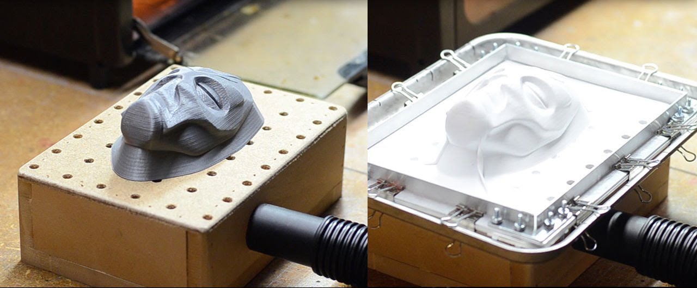
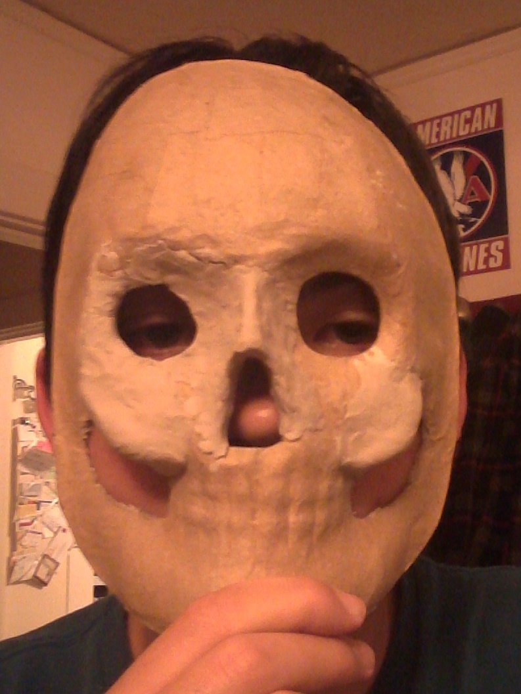
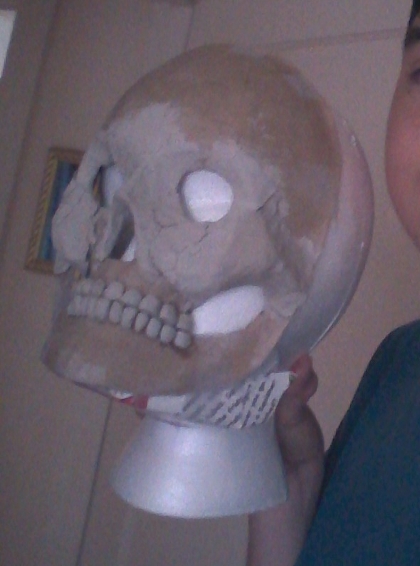
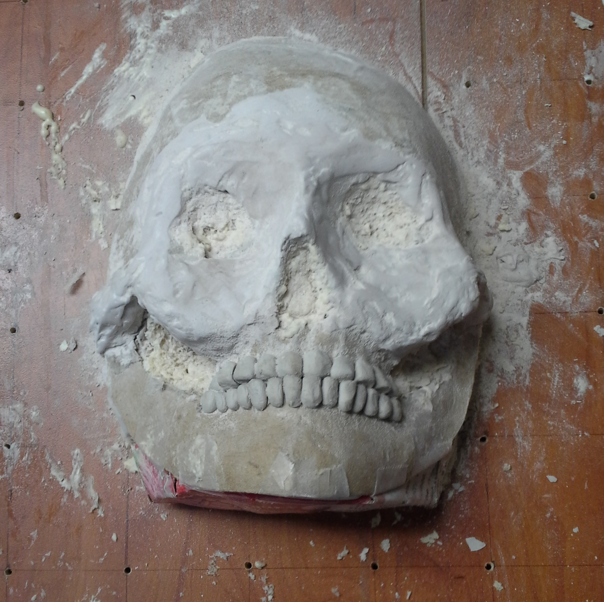

Skull Mask Continued
Vacuum forming is a process where you take a sheet of termoplastic and heat it to a maluable temperture, then you quickly pull an object under it and turn on a vacuum underneath which forces the plastic to mold around it.
First I went to Michaels around Halloween and tried on different cardboard skull masks until I found one that was the closest fit.
Then I got a styrofoam mannequin head and taped the mask onto it. To give it more detail I got some clay and molded on features like cheekbones, then made individual clay teeth and glued those onto the mouth. For the jaw I took a piece of cardboard and taped it in shape under the mask.
Once the base was finished I used the wood shop there and cut the mannequin head in half and cut off the neck, then glued it on a slab of wood with holes drilled out at the corners of a grid. The holes were for ventilation so when vacuum formed it's able to shape around the base as close as possible for high detail. To fill in the skull base better I used spray foam in the cracks around the eyes and under the cheekbones. This also protected the styrofoam from melting under the heat of vacuum forming.
After finishing the base I used Tech Shop's vacuum former and got a nice mold from it. After cutting it out it fit my face pretty well, and even caught the small details of my base that was hard to sand.

Here's a picture I took recently of the finished product that shows more of the details of the mold.